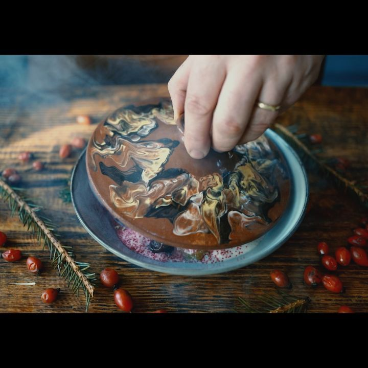

Džatky podľa @umelecke.videa.ewelin — Normy Jedál
🍽 Džatky šefkuchára Daniela Hamraka.
🍴 DZATKY slovak dish from chef Daniel Hamrak.
🍒 VIDEO @umelecke.videa.ewelin
🍓 CHEF @daniel.hamrak
🍉 Special Thanks to photographer
Pali Zmuda
🥗 Music Artist Michal Smetanka group KARPATON
🍇 Thanka you @daniel.schiffer fir beeing our EPIC B Roll inspiration!
#slovakfood #slovakdish #recipe #slovakia #thisisslovakia #broll #video #foodvideo #dzatky #spisske #spis #slovensko #recept #jedlo #inspuracia